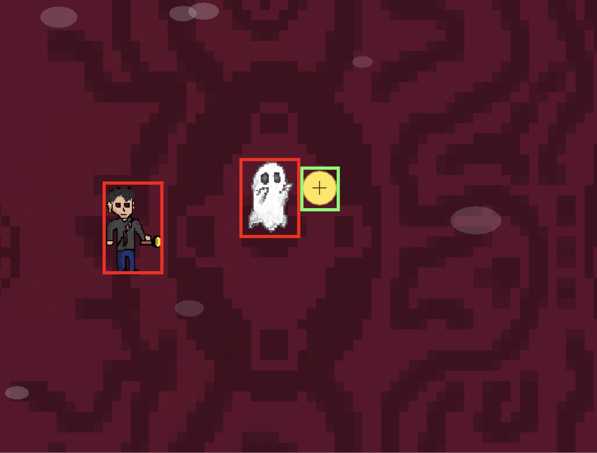

A thrilling horror game, intended to scare users
with various traps, enemies and stages. Main goal is to avoid all enemies
and escape the mansion. - made with JAVA and Javascript.
01 — Concept & Goals
This project began with the idea of using jumpscare and loud noises to create and intense experience.
I wanted players to rely on their flashlight to stun ghosts without getting touched.
My goal was to balance fear, timing, and exploration while keeping gameplay readable and simple.
* Early sketch of gameplay background.
* Early sketch of jumpscare scene.
02 — Movement Prototype
Movements were tested out with keyboard controls as well as arrow key.
Enemies were made sure to select target from a certain distance and follows
the player until they our out of range. To acheive this mechanism, FSM system was used to
create a state between wornder - chase - dead.
*Movement test video of player / enemies.
03 — Enemies + Traps
Zombies and Ghosts follow a strict steer towards target to wonder mechanism.
FOV is used to detect players. Arrows fly from top to bottom in random x coordinate.
Each type of enemy does significant damage to the player, increasing the level of difficulty.
* Ghost — fast, chase-based enemy.
* Zombie — Longer chase-drive, chase-based enemy
* Arrow Trap — fires every few seconds at random x-axis.
04 — Flashlight System + Jumpscare
The flashlight uses a similar FOV type mechanism to create a cone shaped light beam that
would stun enemies when shinet at the target. SPACE BAR turns on the flashlight on and off.
Turning the flashlight on lowers the battery and shortens duration.
Jumpscare is a sudden reaction that swtiches on when user is in contact with the player.
A scary image as well as loud screaming noise is intended to frighten user
* Flashlight cone visibility test.
* Jumpscare & sound test.
05 — Issues / Solutions
Collision detection was one of the biggest issues as the distance between user, enemy and
traps needed to be calculated clearly. Not to mention, the contact between flashlight beam and
enemy had to be exact for a smooth gameplay and animation.
To fix this issue, I have used images for enemies and set a seperate hit box for
each of the characters. Updating the hitbox every frame for all enemies. By
creating a sepereate tight hitbox, it increased collision accuracy significantly.

06 — Reflection + Future
Through this project, I strengthened my understanding of game loops, state machines,
collision detection, and responsive UI design. Each components played a essential part
in making the game enjoyable for everyone.
For next time, I think it would be best to craete a higher fidelity model to
really layout all the mechanics and visual design, thus, less issues will occur.
Final visuals designs could have been drawn with more detail and should have been
thought out more as they are equally important as mechanics.